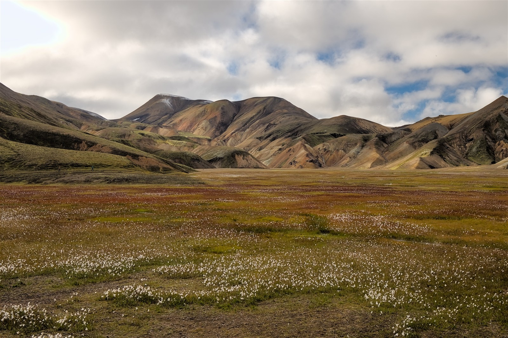
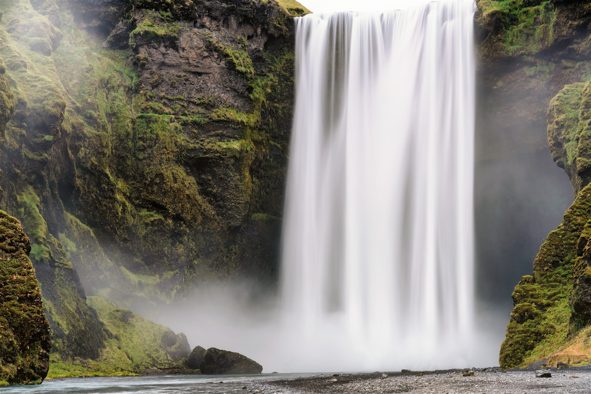
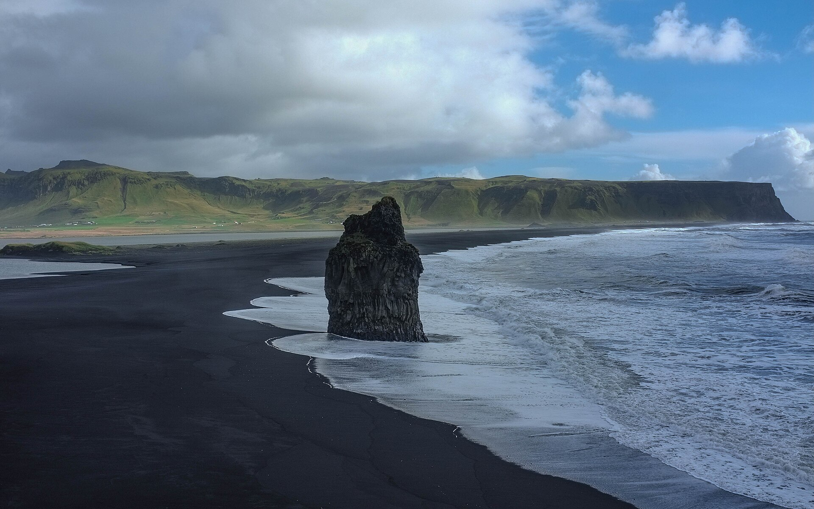
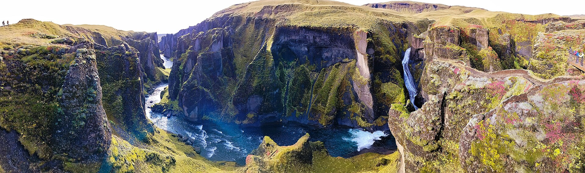
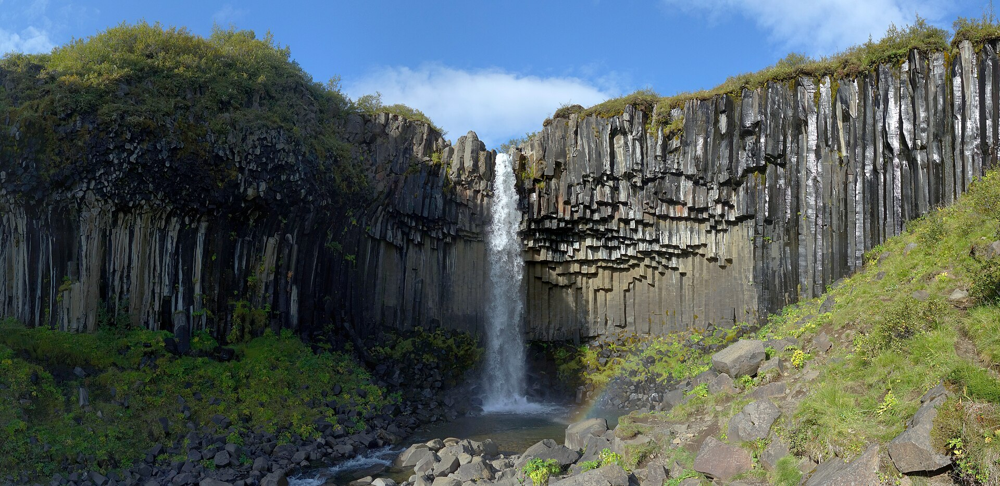
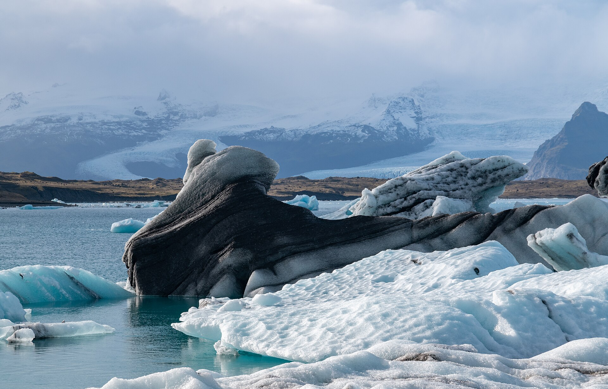
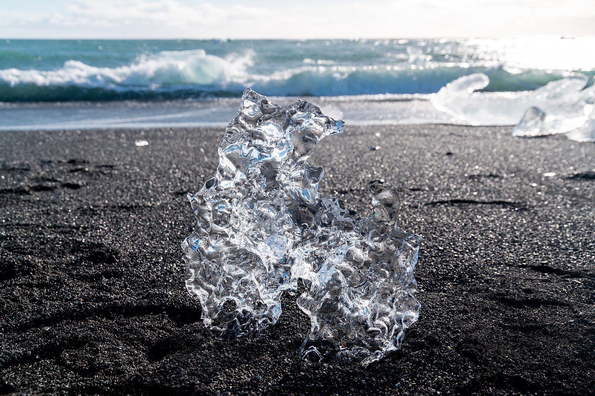
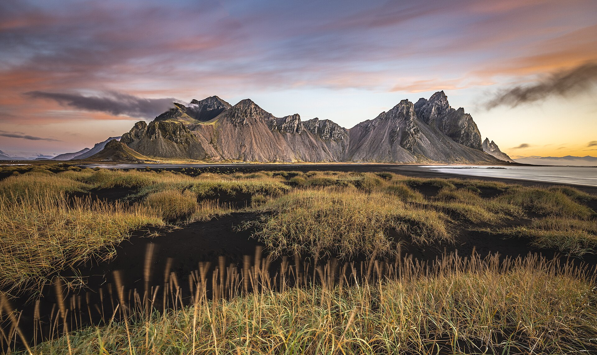

共同约束
9.23 到 Reykjavík（雷克雅未克），9.24 雷市取车出发，9.26/9.27 至少一晚住 Vík（维克），9.29 晚必须回雷市住宿。
共同核心
9.24 黄金圈，9.25 Landmannalaugar（兰德曼纳劳卡）高地团，9.26-9.28 在南岸和东南冰川区之间取舍。
主要分歧
GPT 首推教堂镇版，更看重主驾体力和从容度；DeepSeek 首推 Skaftafell/Freysnes 版，更看重路线效率和冰川体验上限。
当前倾向提示
你们当前较倾向方案 1：9.26 住 Höfn（霍芬），9.27 住 Vík（维克）可以被理解为“风景加强版”：它比教堂镇版和 Skaftafell/Freysnes 版多纳入 Höfn（霍芬）与 Vestrahorn/Stokksnes（蝙蝠山/斯托克斯内斯）这一东南端摄影点，风景类型和摄影上限确实更高。
但它不是舒适度加强版。成立前提是 9.26 南岸必须精选停靠，不把 Seljalandsfoss（塞里雅兰瀑布）、Skógafoss（斯科加瀑布）、Vík（维克）、羽毛峡谷、冰河湖、钻石沙滩全都深玩；否则高地后一日再推进到 Höfn，对主驾会偏累。若你们接受“为了多看蝙蝠山，多承担一段长驾驶”，方案 1 是合理的；若天气差或主驾疲劳，建议当天及时降级为教堂镇或 Skaftafell/Freysnes 住宿。
9.26 Höfn（霍芬） → 9.27 Vik（维克）
当前倾向风景加强
9.26 教堂镇 → 9.27 Vik（维克）
GPT 首推
9.26 Skaftafell/Freysnes → 9.27 Vik
DeepSeek 首推
9.26 Vik → 9.27 Skaftafell/Freysnes
保 Katla
9.26 Vik → 9.27 Vik
大往返
地图读法
标记含义
住宿点蓝色圆点是住宿/补给城镇；绿色是全方案核心景点；橙色是有安全或行程强度提醒的点；红色是最远端摄影加分点。
路线说明
每条路线都包含 9.24-9.28 自驾骨架。9.25 高地为带交通/专业车辆团的建议，不建议普通油车自驾进入 F-road，因此地图上以“高地往返段”示意。
9月底代表性风景照
以下图片均按“对应景点真实照片 + 可核对到 9 月拍摄日期”的标准整理；其中多数可核对到 9 月下旬，Landmannalaugar 只能核对到 2024 年 9 月、Svartifoss 为 9 月中旬，因此作为 9 月底风貌参考而非精确同日照。八张图均已压缩为长边约 1600-1920 px 的本地轻量图（合计约 3.8 MB），不依赖外站即可正常显示；各图仍保留 Wikimedia Commons 图源链接。

图源

图源

图源

图源

图源

图源

图源

图源
配图二次核验结论
已核对 Wikimedia Commons 元数据：Skógafoss（2021-09-28）、Reynisfjara（2016-09-24）、Fjaðrárgljúfur（2023-09-29）、Jökulsárlón（2021-09-29）、Diamond Beach（2021-09-29）、Vestrahorn/Stokksnes（2022-09-23）均为对应景点的 9 月下旬真实照片。Landmannalaugar 可核对为 2024 年 9 月，但未精确到日；Svartifoss 可核对为 2023-09-11，属于 9 月实景参考而非严格 9 月底照片。
五种住宿方案总览与推荐结论
整合结论：GPT 与 DeepSeek 对 5 种住宿骨架判断一致，差异不是“走哪条大路线”，而是每天默认塞多少点、冰川体验优先放在哪里、以及对主驾体力的保守程度。下面每个方案只出现一次，模型差异只在确实影响执行时标注。
你们当前倾向
方案 19.26 Höfn / 9.27 Vik。风景上限最高，多出 Vestrahorn，但不是最省力。
GPT 最推荐
方案 29.26 教堂镇 / 9.27 Vik。更照顾主驾体力和旅行节奏。
DeepSeek 主推
方案 39.26 Skaftafell/Freysnes / 9.27 Vik。冰川体验上限最高，但住宿更难。
| 方案 | 住宿骨架 / 主线 | 主要景点 | 推荐标签 | GPT / DeepSeek 差异 | 综合判断 |
|---|---|---|---|---|---|
| 方案 1 我们的当前倾向 |
9.26 Höfn / 9.27 Vik。主线：Reykjavík → 黄金圈 → Hella → Landmannalaugar → 南岸 → Jökulsárlón → Höfn → Vestrahorn → Vik → Reykjavík。 | 黄金圈、兰德曼纳劳卡、南岸瀑布、维克黑沙滩、羽毛峡谷、大冰河湖、钻石沙滩、蝙蝠山。 | 当前倾向风景加强 | GPT 更建议 9.26 做减法，把东南冰川区留一部分给 9.27；DeepSeek 更进取，倾向 9.26 把冰河湖+钻石沙滩日落也塞进去。建议按 GPT 版保守执行，天气和体力很好时再接近 DeepSeek 版。 | 风景最丰富，唯一覆盖 Vestrahorn；但 9.26 对主驾最吃体力。适合你们愿意用更长驾驶换更多风景的当前倾向。 |
| 方案 2 | 9.26 教堂镇 / 9.27 Vik。主线：Reykjavík → 黄金圈 → Hella → Landmannalaugar → 南岸 → 教堂镇 → 冰川区/冰河湖 → Vik → Reykjavík。 | 黄金圈、高地、南岸瀑布、黑沙滩、羽毛峡谷、Skaftafell/Fjallsárlón、Jökulsárlón、Diamond Beach。 | GPT 最推荐平衡稳妥 | GPT 把羽毛峡谷放在 9.26 东进途中，保持 9.27 冰川区从容；DeepSeek 认可此方案，但更倾向 9.26 加 Sólheimajökull、9.27 加 Svartifoss，因此节奏更满。 | 最照顾驾驶舒适度和住宿现实性。缺点是 9.27 从冰河湖回 Vik 有一段重复路，但整体最像“旅行”而不是赶路。 |
| 方案 3 | 9.26 Skaftafell/Freysnes / 9.27 Vik。主线：Reykjavík → 黄金圈 → Hella → Landmannalaugar → 南岸 → Skaftafell/Freysnes → 冰河湖 → Vik → Reykjavík。 | 黄金圈、高地、南岸、羽毛峡谷、Skaftafell、Svartifoss、瓦特纳冰川徒步、小/大冰河湖、钻石沙滩。 | DeepSeek 主推冰川上限 | 两者方向一致：都适合瓦特纳/Skaftafell 冰川体验。GPT 更强调 9.26 控制南岸停靠；DeepSeek 更愿意把 Sólheimajökull、Dyrhólaey/Reynisfjara 也纳入默认。 | 冰川体验最好，单日驾驶分布也较均衡。主要风险是 Skaftafell/Freysnes 住宿少、价格高；若做冰川徒步，建议减少南岸停靠。 |
| 方案 4 | 9.26 Vik / 9.27 Skaftafell-Freysnes。主线：Reykjavík → 黄金圈 → Hella → Landmannalaugar → Vik → 东南冰川区 → Reykjavík。 | 黄金圈、高地、南岸瀑布、Vik 周边、羽毛峡谷、Skaftafell、冰河湖、钻石沙滩。 | 保 Katla 最顺 | GPT 把 9.26 住 Vik 的优势用于接 Katla；DeepSeek 不默认 Katla，更偏 Sólheimajökull + Vik 周边。两版差异实质是“卡特拉体验”还是“南岸冰川/黑沙滩”。 | 适合明确要保 Katla 的版本。但 9.28 从东南回雷市更长，天气容错差于前三套。 |
| 方案 5 | 9.26 Vik / 9.27 Vik。主线：Reykjavík → 黄金圈 → Hella → Landmannalaugar → Vik → Jökulsárlón 往返或 Vik 深玩 → Reykjavík。 | 黄金圈、高地、南岸、Katla、Vik 周边；若选择大往返则加冰河湖和钻石沙滩。 | 住宿省事大往返 | GPT 建议 9.27 二选一：要么轻量深玩 Vik 周边，要么只做冰河湖/钻石沙滩大往返且中途少加点；DeepSeek 给出完整东南往返上限版。两者都不把它作为优先方案。 | 住宿最省事，但路线效率最低。如果 9.27 去冰河湖，会明显变成开车日；不建议再叠加 Katla、Skaftafell 长徒步和多个支线点。 |
按天住宿与路线规划
下面把五种住宿骨架拆成可执行的 9.23-9.29 日程。共同原则是：9.24 先用黄金圈热身，9.25 用带交通/专业车辆进入 Landmannalaugar（兰德曼纳劳卡），普通油车不建议自驾 F-road；9.26-9.28 根据住宿位置决定东南推进深度；9.29 回到 Reykjavík（雷克雅未克）收尾。
共同基础日程
9.23：下午/晚上陆续抵达 Reykjavík（雷克雅未克），住 Reykjavík。当天只做机场转移、取补给或简单晚餐，不安排长途驾驶。
9.24：Reykjavík（雷克雅未克）取车 → Þingvellir（辛格维利尔国家公园）→ Geysir/Strokkur（盖歇尔/斯特罗柯间歇泉）→ Gullfoss（黄金瀑布）→ Kerið（凯瑞斯火山口湖，可选）→ Hella（海拉）/Flúðir（弗鲁迪尔）/Selfoss（塞尔福斯）住宿。优先 Hella，衔接 9.25 高地和 9.26 南岸东进都更顺。
9.25：参加 Landmannalaugar（兰德曼纳劳卡）高地一日游，建议选择带交通或适合高地路况的专业车辆团；住宿继续放在 Hella/Flúðir/Selfoss 一带，优先 Hella 或 Flúðir，避免高地后再长距离赶路。
9.29：Reykjavík（雷克雅未克）周边收尾，可选 citywalk、Sky Lagoon（天空温泉）、Reykjanes Peninsula（雷克雅内斯半岛）或三人分头行动；晚上必须住 Reykjavík。
| 方案 | 9.26 | 9.27 | 9.28 | 适合人群与取舍 |
|---|---|---|---|---|
| 方案 1 我们的当前倾向 9.26 Höfn / 9.27 Vik |
Hella/Flúðir/Selfoss → Seljalandsfoss（塞里雅兰瀑布）或 Skógafoss（斯科加瀑布）择重点 → Vík（维克）短停补给 → Fjaðrárgljúfur（羽毛峡谷，可选）→ Jökulsárlón（杰古沙龙冰河湖）/Diamond Beach（钻石沙滩）短停或顺延 → Höfn（霍芬）住宿。 | Höfn（霍芬）→ Vestrahorn/Stokksnes（蝙蝠山/斯托克斯内斯）→ Jökulsárlón（杰古沙龙冰河湖）→ Diamond Beach（钻石沙滩）→ Fjallsárlón（小冰河湖，可选）→ Skaftafell（斯卡夫塔山，可选短停）→ Vík（维克）住宿。 | Vík（维克）→ Dyrhólaey（迪霍拉里海岬）/Reynisfjara（雷尼斯黑沙滩）→ 南岸瀑布补漏 → Reykjavík（雷克雅未克）住宿。 | 风景覆盖最强，唯一纳入 Vestrahorn。代价是 9.26 最吃主驾体力，必须精选停靠；若遇大风雨或疲劳，建议把 9.26 住宿降级到教堂镇或 Skaftafell/Freysnes。 |
| 方案 2 GPT 最推荐 9.26 教堂镇 / 9.27 Vik |
Hella/Flúðir/Selfoss → Seljalandsfoss（塞里雅兰瀑布）/Gljúfrabúi（隐秘瀑布）→ Skógafoss（斯科加瀑布）/Kvernufoss（克维努瀑布）→ Dyrhólaey（迪霍拉里海岬）或 Reynisfjara（雷尼斯黑沙滩）→ Fjaðrárgljúfur（羽毛峡谷）→ Kirkjubæjarklaustur（教堂镇）住宿。 | Kirkjubæjarklaustur（教堂镇）→ Skaftafell（斯卡夫塔山）或 Fjallsárlón（小冰河湖）→ Jökulsárlón（杰古沙龙冰河湖）→ Diamond Beach（钻石沙滩）→ Vík（维克）住宿。 | Vík（维克）→ Reynisfjara（雷尼斯黑沙滩）/Dyrhólaey（迪霍拉里海岬）补漏 → Skógafoss（斯科加瀑布）或 Seljalandsfoss（塞里雅兰瀑布）补漏 → Reykjavík（雷克雅未克）住宿。 | 最均衡、最照顾主驾体力和住宿现实。缺点是 9.27 从冰川湖区回 Vík 有回头路，但整体节奏最像从容旅行。 |
| 方案 3 DeepSeek 主推 9.26 Skaftafell/Freysnes / 9.27 Vik |
Hella/Flúðir/Selfoss → 南岸瀑布精选 → Vík（维克）/Reynisfjara（雷尼斯黑沙滩）短停 → Fjaðrárgljúfur（羽毛峡谷）→ Skaftafell/Freysnes（斯卡夫塔山/弗雷斯内斯）住宿。 | Skaftafell（斯卡夫塔山）短步道、Svartifoss（黑瀑布）或瓦特纳冰川徒步择一 → Fjallsárlón（小冰河湖）→ Jökulsárlón（杰古沙龙冰河湖）→ Diamond Beach（钻石沙滩）→ Vík（维克）住宿。 | Vík（维克）→ Dyrhólaey（迪霍拉里海岬）/Reynisfjara（雷尼斯黑沙滩）→ 南岸补漏 → Reykjavík（雷克雅未克）住宿。 | 冰川体验上限最高，9.27 在东南冰川区更从容。主要风险是 Skaftafell/Freysnes 房源少、价格高；若安排冰川徒步，9.26 南岸必须减点。 |
| 方案 4 9.26 Vik / 9.27 Skaftafell-Freysnes |
Hella/Flúðir/Selfoss → Seljalandsfoss（塞里雅兰瀑布）→ Skógafoss（斯科加瀑布）→ Vík（维克）周边；若明确想保 Katla Ice Cave / Glacier（卡特拉冰洞/冰川）跟团，这是最顺的日期安排。住 Vík。 | Vík（维克）→ Fjaðrárgljúfur（羽毛峡谷）→ Skaftafell（斯卡夫塔山）/Freysnes（弗雷斯内斯）→ Fjallsárlón（小冰河湖）或 Jökulsárlón（杰古沙龙冰河湖）择重点 → Skaftafell/Freysnes 住宿。 | Skaftafell/Freysnes（斯卡夫塔山/弗雷斯内斯）→ Diamond Beach（钻石沙滩）或 Jökulsárlón（杰古沙龙冰河湖）清晨补漏 → Reykjavík（雷克雅未克）住宿，途中只做少量停靠。 | 最适合保留卡特拉体验，但 9.28 从东南一口气回雷市较长，天气容错不如方案 1-3。适合能接受 9.28 主要用于返程的人。 |
| 方案 5 9.26 Vik / 9.27 Vik |
Hella/Flúðir/Selfoss → Seljalandsfoss（塞里雅兰瀑布）→ Skógafoss（斯科加瀑布）→ Dyrhólaey（迪霍拉里海岬）/Reynisfjara（雷尼斯黑沙滩）→ Vík（维克）住宿；可选 Katla Ice Cave / Glacier（卡特拉冰洞/冰川）跟团。 | 住 Vík。二选一：A 版做 Vík → Jökulsárlón（杰古沙龙冰河湖）/Diamond Beach（钻石沙滩）大往返，中途最多加 Fjaðrárgljúfur（羽毛峡谷）或 Fjallsárlón（小冰河湖）一个点；B 版放弃东南远端，深玩 Vík、黑沙滩、海岬、瀑布和摄影机位。 | Vík（维克）→ 南岸补漏 → Reykjavík（雷克雅未克）住宿。 | 住宿最省心、对变天气最友好，但路线效率最低。若 9.27 强行冰河湖往返，会变成纯驾驶日；若不去冰河湖，风景丰富度会低于方案 1-3。 |
执行提醒
五套方案都建议把 9.25 高地后一晚放在 Hella/Flúðir/Selfoss 一带，不建议高地结束后继续赶到 Vík 或更东。9 月底南岸和东南冰岛的主要风险不是“景点不够”，而是风、大雨、低能见度和主驾疲劳；每天请预留可删除点，把黑沙滩、冰川湖和高地团安全放在第一优先级。